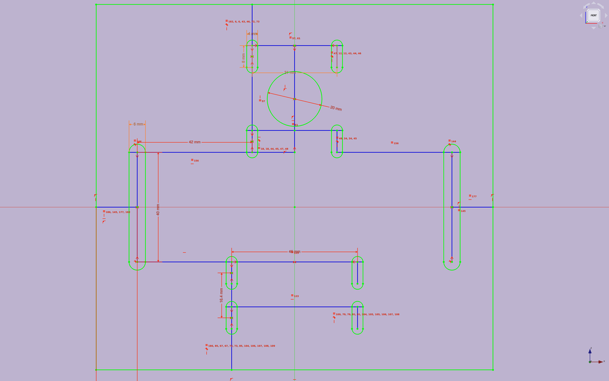
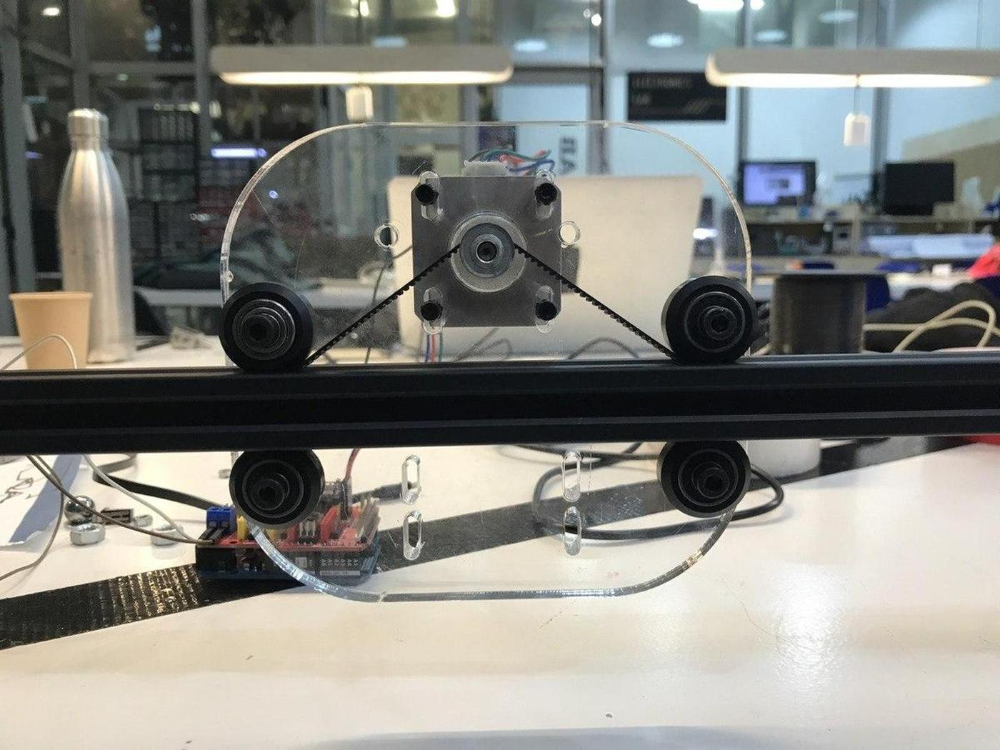
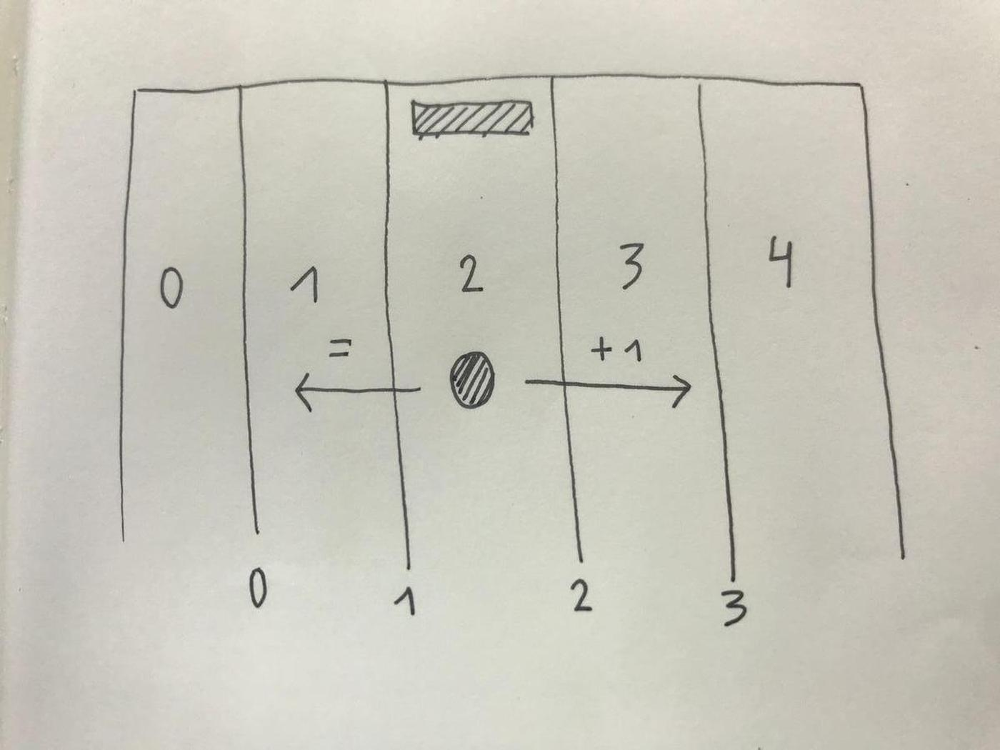

For the Machine Design week at the Fab Academy, we were asked to make a machine of any type, but one that we could operate and automate. I teamed up with Benjamin Scott and we decided to go for a machine that plays Pong again itself. We call it the Pong Machine.
First of all, we had to find out how to make the machine we had in mind, which was not easy when we launched this project in June 2020, towards the official end of the Academy. A few months later, as the Covid-19 crisis subsides, we have a better understanding of the tools we have in the lab, how the mechanics work, what we have to produce by ourselves and what we can take from others.
I'm very happy with the way our project went, even if we didn't reach the final stage we were aiming for: Our machine doesn't play pong. But it can move its pallet according to the position of the ball, which is already something great for us. More time and testing could help us to develop the final version of our machine, perhaps in the near future? Let's see how it goes.
You can find our full documentation on our specific Pong Machine website.
With Benjamin, we did almost the whole project together because it was easier for us to learn the different steps together and help each other in real time. It's certainly not the best way to go fast, but it's certainly the best way to learn and act as a team. Nevertheless, we naturally divided the tasks according to our personal taste.
Benjamin
Benjamin did the ball detection part. He prepared the field and made sure that our line detection logic worked properly, from the choice of equipment to the electronics to make it work. He also built the rails and made the connectors to make them stand upright.
Antoine
I designed and fabricated the mounting plate on which we attached the stepper motor and solenoid (which would be used to push the ball forward) and a 3D printed support for the solenoid.I also did the coding part of the project, so that we could move the motor according to what the lines say. I really enjoy solving logic problems.
I designed and laser-cut a mounting plate made of acrylic (10 mm) with the imprints of our elements (NEMA17 stepper motor and solenoid) in order to be able to fix our elements to the structure, and thus make it move when the stepper motor is actuated.

Solenoid holder
To fix the solenoid, which will then be used to push the ball forward, I designed an holder that we could screw onto our mounting plate.
The following code does two main things for our Pong Machine. The first is the calibration of the stepper motor, in order to know how many steps separate the beginning from the end of the rail, and therefore to know how to move the paddle. The second is to update the position of the motor according to any crossed lines in the field, in order to follow the ball. Later, it will actuate the solenoid to push the ball forward.
Calibration
To calibrate, I run the stepper motor in one direction until it reaches an endstop, then I make it move in the other direction counting all the steps the motor takes until we reach the other endstop. Once we know how many steps separate the beginning from the end, we can place the motor in the middle and start the game.
void motorCalibration()
{
endstopStatus = digitalRead(endstop);
while (endstopStatus == true)
{
// to right
motorStep(false, 1, 0);
endstopStatus = digitalRead(endstop);
}
motorStep(true, 30, 50);
endstopStatus = digitalRead(endstop);
while (endstopStatus == true)
{
// to left
motorStep(true, 1, 0);
endstopStatus = digitalRead(endstop);
totalSteps++;
}
totalSteps = totalSteps + 30;
Serial.println(totalSteps);
// send motor to center
laneSteps = totalSteps / 4;
motorStep(false, totalSteps / 2, 50);
}
Positioning
To position correctly the pad according to any crossed lines we had to think about good logic. And the simplest one is always the best.

Each lane has a numerical value between 0 and 4 and each line also has a numerical value between 0 and 3.
The game is started with the motor in the centre, in lane 2. As soon as a line is crossed, we check whether the value of the line is lower or higher than the value of the lane, which indicates whether the ball is moving to the right or to the left.
Then, knowing the direction and the line crossed, we know in which lane the motor must move. But for how many steps? For the difference between its current position and its final position multiplied by the number of steps that make up a lane.
Let's say that the previous calibration gave us 1000 steps between the beginning and the end of the track. We have 5 lanes in our field, which means that each lane has a width of 200 steps. If our motor is on lane 2 and the line 3 is crossed: 3 is higher than 2, this means that we are going to the right, and the motor has to move on 1 lane (3 - 2), which corresponds to 200 steps to the right. And so on.
void updatePos(int line)
{
if (line < position)
{
diffPosition = position - line;
motorStep(true, laneSteps * diffPosition, 50);
position = line;
}
else
{
diffPosition = (line + 1) - position;
motorStep(false, laneSteps * diffPosition, 50);
position = line + 1;
}
}
Source code
Here is full code that I wrote to run our prototype.
// Pong Machine - One side
// 2 4 6 8
// 1 | 3 | 5 | 7 | 9
// ----------------- A
// Stepper motor pins
#define motorEnable 8
#define motorStp 3
#define motorDir 6
// Line pins
#define line0 A2
#define line1 A1
#define line2 A0
#define line3 A3
// Line status
bool line0Status = false;
bool line1Status = false;
bool line2Status = false;
bool line3Status = false;
// Endstop pin
#define endstop 10
int endstopStatus;
// Lanes
int laneNumber = 5;
int totalSteps = 0;
int laneSteps;
// Position
int position = 2;
int diffPosition;
int moveSteps;
void motorStep(bool dir, int steps, int inDelay)
{
digitalWrite(motorDir, dir);
delay(inDelay);
for (int i = 0; i < steps; i++)
{
endstopStatus = digitalRead(endstop);
digitalWrite(motorStp, HIGH);
delayMicroseconds(800);
digitalWrite(motorStp, LOW);
delayMicroseconds(800);
}
}
void motorCalibration()
{
endstopStatus = digitalRead(endstop);
while (endstopStatus == true)
{
// to right
motorStep(false, 1, 0);
endstopStatus = digitalRead(endstop);
}
motorStep(true, 30, 50);
endstopStatus = digitalRead(endstop);
while (endstopStatus == true)
{
// to left
motorStep(true, 1, 0);
endstopStatus = digitalRead(endstop);
totalSteps++;
}
totalSteps = totalSteps + 30;
Serial.println(totalSteps);
// send motor to center
laneSteps = totalSteps / 4;
motorStep(false, totalSteps / 2, 50);
}
void updatePos(int line)
{
if (line < position)
{
diffPosition = position - line;
motorStep(true, laneSteps * diffPosition, 50);
position = line;
}
else
{
diffPosition = (line + 1) - position;
motorStep(false, laneSteps * diffPosition, 50);
position = line + 1;
}
}
void setup()
{
Serial.begin(9600);
delay(1000);
pinMode(motorEnable, OUTPUT);
pinMode(motorStp, OUTPUT);
pinMode(motorDir, OUTPUT);
pinMode(endstop, INPUT_PULLUP);
pinMode(line0, INPUT);
pinMode(line1, INPUT);
pinMode(line2, INPUT);
pinMode(line3, INPUT);
digitalWrite(motorEnable, LOW);
motorCalibration();
}
void loop()
{
// Update line status
line0Status = digitalRead(line0);
line1Status = digitalRead(line1);
line2Status = digitalRead(line2);
line3Status = digitalRead(line3);
// Update position
if (line0Status)
{
updatePos(0);
}
else if (line1Status)
{
updatePos(1);
}
else if (line2Status)
{
updatePos(2);
}
else if (line3Status)
{
updatePos(3);
}
}